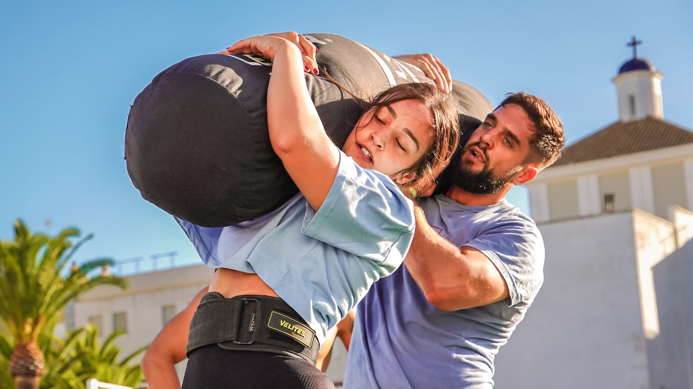
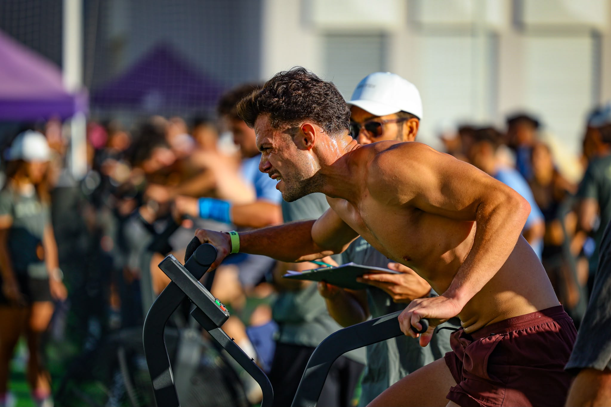

Cádiz hosted the 2026 Cádiz Throwdown on 12–13 September, bringing functional fitness competition to Colegio San Felipe Neri. Organised by C.D. Erytheia, the event put teamwork at the centre of a weekend of Cross Training.
The format brought athletes together in teams of three, with RX, Intermediate, Scaled and Masters divisions. That structure gave competitors different entry points while retaining the shared demands of coordinated movement and physical effort.

Working together under load
Image Media’s photographs show the practical demands of that teamwork: athletes lifting long weighted bags overhead and sharing the load across their shoulders, with judges and spectators close to the competition area.
Alongside those shared movements, the coverage captures an athlete driving an air bike—another view of the effort on the competition floor. The three selected images move from the wider arena to close-up moments of concentration and coordination.

Image Media coverage
Image Media covered the event with Luis Moreira, Paulo Nomade, Michael Rosa, Andres Escassi and Fran Paulino. The photographs accompanying this report are by Paulo Nomade and Fran Paulino.